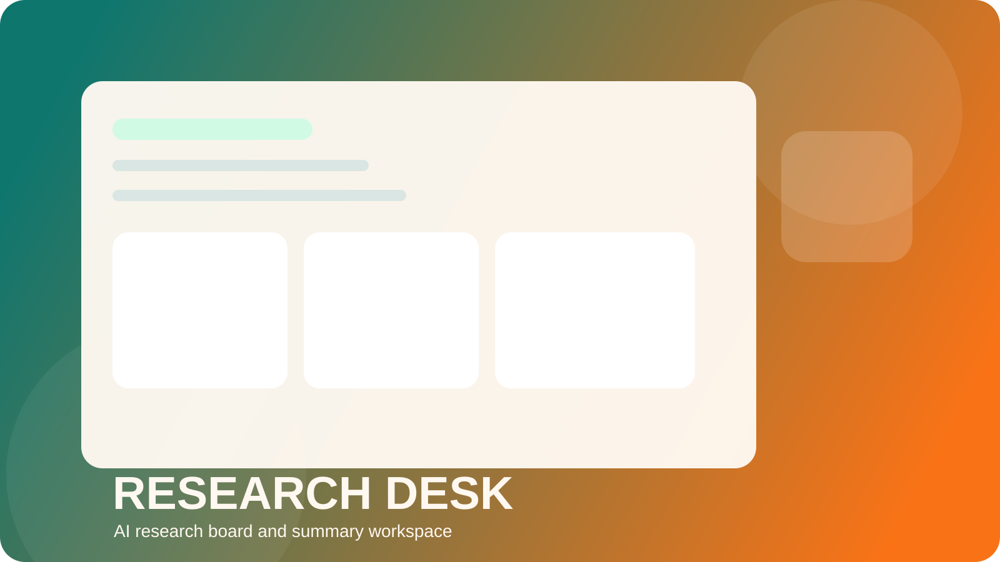
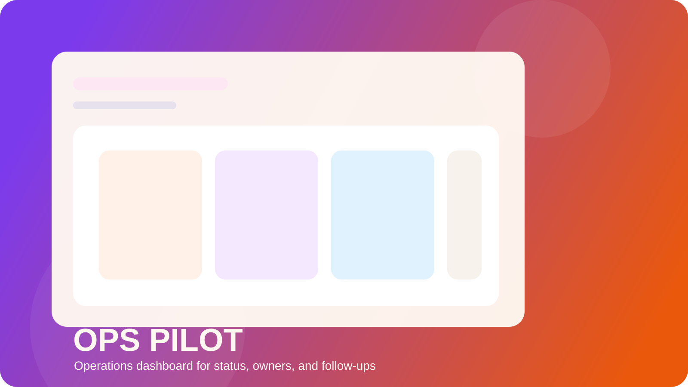

Application Catalog
制作しているアプリケーションを、更新しやすい一覧で見せる。
現在のショーケースは 3 件です。各アプリはカテゴリ、画像、利用シーン、要点をまとめて持ち、一覧と詳細へ同じ情報が反映される構成にしています。
Categories
代表的な制作テーマ
アプリ名だけでなく、どの領域の課題に効くのかを軸に並べています。ビジュアルがあっても意味が伝わらなければ弱いので、要点とカテゴリを同時に出しています。
AI Support
Operations
Prototype
Showcases
公開中のアプリ一覧

Research Desk
市場調査と競合比較を、ひとつのボードで進めるAIリサーチ支援アプリ。
情報収集、要点抽出、比較メモ作成までの流れを短くし、企画の初速を上げるためのショーケースアプリです。
ソース横断の要点整理
比較メモのドラフト生成
共有しやすい調査ボード

Ops Pilot
進捗、担当、確認漏れを一画面で把握できる業務進行ダッシュボード。
現場で散らばりやすい進捗情報をまとめ、更新確認や引き継ぎの手間を減らすための運用アプリです。
担当と期限の見える化
確認漏れを減らす一覧設計
更新状況を追いやすいダッシュボード

Launch Preview
企画提案を、静的な資料ではなく触れるデモで伝える体験プロトタイプ。
新しいサービスや導線のアイデアを、第一印象と利用フローごと体験できる形で示すためのショーケースです。
第一印象を作るヒーロー設計
利用開始までの導線試作
提案用デモとしての見せ方
一覧ページで伝える基準
課題起点で説明する
機能説明より先に、誰のどの面倒を減らすアプリかを示します。
利用シーンを明示する
実際に使う場面を添えて、導入後のイメージが湧くようにします。
画像で実在感を出す
カバー画像と画面イメージを持たせることで、説明だけの一覧にしません。
Consultation
この中に近いテーマがあるなら、相談の入口はここから。
新規アプリの立ち上げ、既存プロダクトの見せ方改善、社内向けツールの整理まで。方向性が近ければ、要件が固まり切っていなくても相談できます。